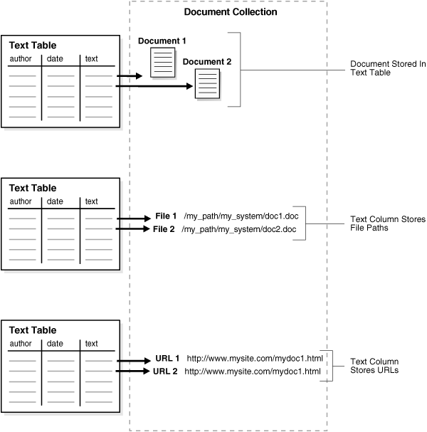
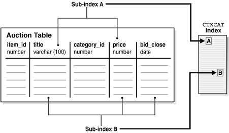

3 Indexing with Oracle Text
Oracle Text provides several types of indexes, which you create depending on the type of application you want to develop.
This chapter discusses the following topics:
3.1 About Oracle Text Indexes
The discussion of Oracle Text indexes includes the different types of indexes, their structure, the indexing process, and limitations.
The following topics provide information about Oracle Text indexes:
3.1.1 Types of Oracle Text Indexes
With Oracle Text, you can create indexes of several types using CREATE INDEX. Table 3-1 describes each index type, its purpose, and the features it supports.
Table 3-1 Oracle Text Index Types
| Index Type | Description | Supported Preferences and Parameters | Query Operator | Notes |
|---|---|---|---|---|
|
|
Use this index to build a text retrieval application when your text consists of large coherent documents. You can index documents of different formats such as MS Word, HTML or plain text. You can customize the index in a variety of ways. This index type requires |
All These supported parameters include the index partition clause, and the format, charset, and language columns. |
Grammar is called the The |
Supports all documents services and query services. Supports indexing of partitioned text tables. Supports |
|
|
Use this index type for better mixed query performance. Typically, with this index type, you index small documents or text fragments. Other columns in the base table, such as item names, prices, and descriptions can be included in the index to improve mixed query performance. This index type is transactional, automatically updating itself after DML to base table. No |
Format, charset, and language columns not supported. Table and index partitioning not supported. |
Grammar is called The Theme querying is supported. |
This index is larger and takes longer to build than a The size of a The |
|
|
Use |
|
Single documents (plain text, HTML, or XML) can be classified using the |
An Oracle Text index is an Oracle Database domain index. To build your query application, you can create an index of type CONTEXT with a mixture of text and structured data columns, and query it with the CONTAINS operator.
You create an index from a populated text table. In a query application, the table must contain the text or pointers to where the text is stored. Text is usually a collection of documents, but can also be small text fragments.
For better performance for mixed queries, you can create a CONTEXT index with FILTER BY and/or ORDER BY clauses to specify relational columns that will be used in structured criteria of the mixed query. Query this index with the CONTAINS operator.
Use the CTXCAT index type when your application relies heavily on mixed queries to search small documents or descriptive text fragments based on related criteria such as dates or prices. Query this index with the CATSEARCH operator.
To build a document classification application using simple or rule-based classification, create an index of type CTXRULE. This index classifies plain text, HTML, or XML documents using the MATCHES operator. Store your defining query set in the text table you index.
Note:
If you are building a new application that uses XML data, Oracle recommends that instead of using CTXRULE, you use XMLIndex.
Create a text index as a type of extensible index to Oracle Database using standard SQL. This means that an Oracle Text index operates like an Oracle Database index. It has a name by which it is referenced and can be manipulated with standard SQL statements.
The benefits of a creating an Oracle Text index include fast response time for text queries with the CONTAINS, CATSEARCH, and MATCHES Oracle Text operators. These operators query the CONTEXT, CTXCAT, and CTXRULE index types respectively.
Note:
Because a Transparent Data Encryption-enabled column does not support domain indexes, it cannot be used with Oracle Text. However, you can create an Oracle Text index on a column in a table stored in a Transparent Data Encryption-enabled tablespace.
See Also:
-
Oracle XML DB Developer's Guide for information about
XMLIndexand indexingXMLTypedata
3.1.2 Structure of the Oracle Text CONTEXT Index
Oracle Text indexes text by converting all words into tokens. The general structure of an Oracle Text CONTEXT index is an inverted index where each token contains the list of documents (rows) that contain that token.
For example, after a single initial indexing operation, the word DOG might have an entry as follows:
| Word | Appears in Document |
|---|---|
|
DOG |
DOC1 DOC3 DOC5 |
This means that the word DOG is contained in the rows that store documents one, three, and five.
Merged Word and Theme Index
By default in English and French, Oracle Text indexes theme information with word information. You can query theme information with the ABOUT operator. You can optionally enable and disable theme indexing.
See Also:
"Creating Preferences " to learn more about indexing theme information
3.1.3 The Oracle Text Indexing Process
This section describes the Oracle Text indexing process. Initiate the indexing process using the CREATE INDEX statement to create an Oracle Text index of tokens, organized according to the parameters and preferences you specify.
Figure 3-1 shows the indexing process. This process is a data stream that is acted upon by the different indexing objects. Each object corresponds to an indexing preference type or section group you can specify in the parameter string of CREATE INDEX or ALTER INDEX.
Oracle Text processes the data stream with the following objects and engine:
3.1.3.1 Datastore Object
The stream starts with the datastore reading in the documents as they are stored in the system according to your datastore preference. For example, if you have defined your datastore as FILE_DATASTORE, then the stream starts by reading the files from the operating system. You can also store your documents on the Internet or in Oracle Database. Wherever your files reside physically, you must always have a text table in Oracle Database that points to the file.
3.1.3.2 Filter Object
The stream then passes through the filter. What happens here is determined by your FILTER preference. The stream can be acted upon in one of the following ways:
-
No filtering takes place. This happens when you specify the
NULL_FILTERpreference type or when the value of the format column isIGNORE. Documents that are plain text, HTML, or XML need no filtering. -
Formatted documents (binary) are filtered to marked-up text. This happens when you specify the
AUTO_FILTERpreference type or when the value of the format column isBINARY.
3.1.3.3 Sectioner Object
After being filtered, the marked-up text passes through the sectioner that separates the stream into text and section information. Section information includes where sections begin and end in the text stream. The type of sections extracted is determined by your section group type.
The section information is passed directly to the indexing engine which uses it later. The text is passed to the lexer.
3.1.3.4 Lexer Object
You create a lexer preference using one of the Oracle Text lexer types to specify the language of the text to be indexed. The lexer breaks the text into tokens according to your language. These tokens are usually words. To extract tokens, the lexer uses the parameters as defined in your lexer preference. These parameters include the definitions for the characters that separate tokens such as whitespace, and whether to convert the text to all uppercase or to leave it in mixed case.
When theme indexing is enabled, the lexer analyzes your text to create theme tokens for indexing.
3.1.3.5 Indexing Engine
The indexing engine creates the inverted index that maps tokens to the documents that contain them. In this phase, Oracle Text uses the stoplist you specify to exclude stopwords or stopthemes from the index. Oracle Text also uses the parameters defined in your WORDLIST preference, which tell the system how to create a prefix index or substring index, if enabled.
3.1.4 About Updates to Indexed Columns
In releases prior to Oracle Database 12c Release 2 (12.2), when there is an update to the column on which a Text index is based, the document is unavailable for search operations until the index is synchronized. User queries cannot perform a search of this document. Starting with Oracle Database 12c Release 2 (12.2), you can specify that documents must be searchable after updates, without immediately performing index synchronization. Before the index is synchronized, queries use the old index entries to fetch the contents of the old document. After index synchronization, user queries fetch the contents of the updated document.
The ASYNCHRONOUS_UPDATE option for indexes enables you to retain the old contents of a document after an update and then use this index to answer user queries.
See Also:
-
ALTER INDEXin the Oracle Text Reference -
CREATE INDEXin the Oracle Text Reference
3.1.5 Partitioned Tables and Indexes
You can create a partitioned CONTEXT index on a partitioned text table. The table must be partitioned by range. Hash, composite, and list partitions are not supported.
You might create a partitioned text table to partition your data by date. For example, if your application maintains a large library of dated news articles, you can partition your information by month or year. Partitioning simplifies the manageability of large databases, because querying, DML, and backup and recovery can act on a single partition.
On local CONTEXT indexes with multiple table sets, Oracle Text supports the number of partitions supported by Oracle Database.
Note:
The number of partitions supported in Oracle Text is approximately 1024K-1. This limit, which should be more than adequate, is not applicable to a CONTEXT index on partitioned tables.
See Also:
Oracle Database Concepts for more information about partitioning
To query a partitioned table, you use CONTAINS in the WHERE clause of a SELECT statement as you query a regular table. You can query the entire table or a single partition. However, if you are using the ORDER BY SCORE clause, Oracle recommends that you query single partitions unless you include a range predicate that limits the query to a single partition.
3.1.6 Creating an Index Online
When it is not practical to lock up your base table for indexing because of ongoing updates, you can create your index online with the ONLINE parameter of CREATE INDEX. This way an application with heavy DML need not stop updating the base table for indexing.
There are short periods, however, when the base table is locked at the beginning and end of the indexing process.
See Also:
Oracle Text Reference to learn more about creating an index online
3.1.7 Parallel Indexing
Oracle Text supports parallel indexing with CREATE INDEX.
When you enter a parallel indexing statement on a non-partitioned table, Oracle Text splits the base table into temporary partitions, spawns child processes, and assigns a child to a partition. Each child then indexes the rows in its partition. The method of slicing the base table into partitions is determined by Oracle and is not under your direct control. This is true as well for the number of child processes actually spawned, which depends on machine capabilities, system load, your init.ora settings, and other factors. Because of these variables, the actual parallel degree may not match the degree of parallelism requested.
Because indexing is an I/O intensive operation, parallel indexing is most effective in decreasing your indexing time when you have distributed disk access and multiple CPUs. Parallel indexing can only affect the performance of an initial index with CREATE INDEX. It does not affect DML performance with ALTER INDEX, and has minimal impact on query performance.
Because parallel indexing decreases the initial indexing time, it is useful for the following scenarios:
3.1.8 Indexing and Views
Oracle SQL standards do not support creating indexes on views. If you need to index documents whose contents are in different tables, you can create a data storage preference using the USER_DATASTORE object. With this object, you can define a procedure that synthesizes documents from different tables at index time.
See Also:
Oracle Text Reference to learn more about USER_DATASTORE
Oracle Text does support the creation of CONTEXT, CTXCAT, and CTXRULE indexes on materialized views (MVIEW).
3.2 Considerations for Oracle Text Indexing
Use the CREATE INDEX statement to create an Oracle Text index. When you create an index and specify no parameter string, an index is created with default parameters. You can create either a CONTEXT, CTXCAT, or CTXRULE index.
This sections contains the following topics:
You can also override the defaults and customize your index to suit your query application. The parameters and preference types you use to customize your index with CREATE INDEX fall into the following general categories.
3.2.1 Location of Text
The basic prerequisite for an Oracle Text query application is to have a populated text table. The text table is where you store information about your document collection and is required for indexing.
When you create a CONTEXT index, you can populate rows in your text table with one of the following elements:
-
Path names of documents in your file system
-
URLs that specify Web documents
Figure 3-2 illustrates these different methods.
When creating a CTXCAT or CTXRULE index, only the first method shown is supported.
Figure 3-2 Different Ways of Storing Text
Description of "Figure 3-2 Different Ways of Storing Text"
By default, the indexing operation expects your document text to be directly loaded in your text table, which is the first method shown previously.
However, when you create a CONTEXT index, you can specify the other ways of identifying your documents such as with filenames or with URLs by using the corresponding data storage indexing preference.
3.2.1.2 Storing Text in the Text Table
Oracle Text provides different ways to store text directly in your table.
3.2.1.2.1 CONTEXT Data Storage
You can store documents in your text table in different ways.
You can store documents in one column using the DIRECT_DATASTORE data storage type or over a number of columns using the MULTI_COLUMN_DATASTORE type. When your text is stored over a number of columns, Oracle Text concatenates the columns into a virtual document for indexing.
You can also create master-detail relationships for your documents, where one document can be stored across a number of rows. To create master-detail index, use the DETAIL_DATASTORE data storage type.
You can also store your text in a nested table using the NESTED_DATASTORE type.
Oracle Text supports the indexing of the XMLType datatype, which you use to store XML documents.
3.2.1.3 Storing File Path Names
In your text table, you can store path names to files stored in your file system. When you do so, use the FILE_DATASTORE preference type during indexing. This method of data storage is supported for CONTEXT indexes only.
3.2.1.4 Storing URLs
You can store URL names to index Web sites. When you do so, use the URL_DATASTORE preference type during indexing. This method of data storage is supported for CONTEXT indexes only.
3.2.1.5 Storing Associated Document Information
In your text table, you can create additional columns to store structured information that your query application might need, such as primary key, date, description, or author.
3.2.1.6 Format and Character Set Columns
If your documents are of mixed formats or of mixed character sets, you can create the following additional columns:
-
A format column to record the format (
TEXTorBINARY) to help filtering during indexing. You can also use the format column to ignore rows for indexing by setting the format column toIGNORE. This is useful for bypassing rows that contain data incompatible with text indexing such as images. -
A character set column to record the document character set for each row.
When you create your index, you must specify the name of the format or character set column in the parameter clause of CREATE INDEX.
For all rows containing the keywords AUTO or AUTOMATIC in character set or language columns, Oracle Text will apply statistical techniques to determine the character set and language respectively of the documents and modify document indexing appropriately.
3.2.1.7 Supported Document Formats
Because the system can index most document formats including HTML, PDF, Microsoft Word, and plain text, you can load any supported type into the text column.
When you have mixed formats in your text column, you can optionally include a format column to help filtering during indexing. With the format column you can specify whether a document is binary (formatted) or text (non-formatted such as HTML). If you mix HTML and XML documents in 1 index, you might not be able to configure your index to your needs; you cannot prevent stylesheet information from being added to the index.
See Also:
Oracle Text Reference for more information about the supported document formats
3.2.1.8 Summary of DATASTORE Types
When you index with CREATE INDEX, you specify the location using the datastore preference. Use the appropriate datastore according to your application.
Table 3-2 summarizes the different ways you can store your text with the datastore preference type.
Table 3-2 Summary of DATASTORE Types
| Datastore Type | Use When |
|---|---|
|
|
Data is stored internally in a text column. Each row is indexed as a single document. Your text column can be |
|
|
Data is stored in a text table in more than one column. Columns are concatenated to create a virtual document, one document for each row. |
|
|
Data is stored internally in a text column. Document consists of one or more rows stored in a text column in a detail table, with header information stored in a master table. |
|
|
Data is stored externally in operating system files. Filenames are stored in the text column, one for each row. |
|
|
Data is stored in a nested table. |
|
|
Data is stored externally in files located on an intranet or the Internet. URLs are stored in the text column. |
|
|
Documents are synthesized at index time by a user-defined stored procedure. |
Indexing time and document retrieval time will be increased for indexing URLs, because the system must retrieve the document from the network.
Note:
To troubleshoot issues with triggers and MULTI_COLUMN_DATASTORE or USER_DATASTORE, refer to the following article on My Oracle Support: "No pending rows using triggers on Text indexed columns with MULTI_COLUMN_DATASTORE or USER_DATASTORE to bring in the various columns for indexing" (Doc ID 1613741.1)
See Also:
3.2.2 Document Formats and Filtering
Formatted documents such as Microsoft Word and PDF must be filtered to text to be indexed. The type of filtering the system uses is determined by the FILTER preference type. By default, the system uses the AUTO_FILTER filter type, which automatically detects the format of your documents and filters them to text.
Oracle Text can index most formats. Oracle Text can also index columns that contain documents with mixed formats.
See Also:
Oracle Text Reference for information about AUTO_FILTER supported document and graphics formats
3.2.2.1 No Filtering for HTML
3.2.2.2 Filtering Mixed-Format Columns
If you have a mixed-format column such as one that contains Microsoft Word, plain text, and HTML documents, you can bypass filtering for plain text or HTML by including a format column in your text table. In the format column, you tag each row TEXT or BINARY. Rows that are tagged TEXT are not filtered.
For example, you can tag the HTML and plain text rows as TEXT and the Microsoft Word rows as BINARY. You specify the format column in the CREATE INDEX parameter clause.
A third format column type, IGNORE, is provided for when you do not want a document to be indexed at all. This is useful, for example, when you have a mixed-format table that includes plain-text documents in both Japanese and English, but you only want to process the English documents; another example might be that of a mixed-format table that includes both plain-text documents and images. Because IGNORE is implemented at the datastore level, it can be used with all filters.
3.2.2.3 Custom Filtering
You can create your own custom filter to filter documents for indexing. You can create either an external filter that is executed from the file system or an internal filter as a PL/SQL or Java stored procedure.
For external custom filtering, use the USER_FILTER filter preference type.
For internal filtering, use the PROCEDURE_FILTER filter type.
See Also:
3.2.3 Bypassing Rows for Indexing
You can bypass rows in your text table that are not to be indexed, such as rows that contain image data. To do so, create a format column in your table and set it to IGNORE. You name the format column in the parameter clause of CREATE INDEX.
3.2.4 Document Character Set
The indexing engine expects filtered text to be in the database character set. When you use the AUTO_FILTER filter type, formatted documents are converted to text in the database character set.
If your source is text and your document character set is not the database character set, then you can use the AUTO_FILTER filter type to convert your text for indexing.
3.2.4.1 Character Set Detection
When the CHARSET column is set to AUTO, the AUTO_FILTER filter detects the character set of the document and converts it from the detected character set to the database character set, if there is a difference.
3.2.4.2 Mixed Character Set Columns
If your document set contains documents with different character sets, such as JA16EUC and JA16SJIS, you can index the documents provided you create a charset column. You populate this column with the name of the document character set for each row. You name the column in the parameter clause of the CREATE INDEX statement.
3.2.5 Document Language
Oracle Text can index most languages. By default, Oracle Text assumes the language of text to index is the language you specify in your database setup. Depending on the language of your documents, use one of the following lexer types:
Use the BASIC_LEXER preference type to index whitespace-delimited languages such as English, French, German, and Spanish. For some of these languages, you can enable alternate spelling, composite word indexing, and base letter conversion.
Use the MULTI_LEXER preference type for indexing tables containing documents of different languages such as English, German, and Japanese.
Use the USER_LEXER preference type to create your own lexer for indexing a particular language.
Use the WORLD_LEXER preference type for indexing tables containing documents of different languages and to autodetect the languages in the document.
You can also use other lexer types that are designed specifically to tokenize and index Japanese, Chinese, and Korean.
See Also:
Oracle Text Reference to learn more about indexing languages and lexer types
3.2.5.1 Language Features Outside BASIC_LEXER
With the BASIC_LEXER, Japanese, Chinese and Korean lexers, Oracle Text provides a lexing solution for most languages. For other languages, you can create your own lexing solution using the user-defined lexer interface. This interface enables you to create a PL/SQL or Java procedure to process your documents during indexing and querying.
You can also use the user-defined lexer to create your own theme lexing solution or linguistic processing engine.
See Also:
Oracle Text Reference to learn more about the user-defined lexer
3.2.5.2 Indexing Multi-language Columns
Oracle Text can index text columns that contain documents of different languages, such as a column that contains documents written in English, German, and Japanese. To index a multi-language column, you need a language column in your text table. Use the MULTI_LEXER preference type.
You can also incorporate a multi-language stoplist when you index multi-language columns.
3.2.6 Indexing Special Characters
When you use the BASIC_LEXER preference type, you can specify how non-alphanumeric characters such as hyphens and periods are indexed in relation to the tokens that contain them. For example, you can specify that Oracle Text include or exclude hyphen character (-) when indexing a word such as Web-site.
These characters fall into BASIC_LEXER categories according to the behavior you require during indexing. The way you set the lexer to behave for indexing is the way it behaves for query parsing.
3.2.6.1 Printjoin Characters
Define a non-alphanumeric character as printjoin when you want this character to be included in the token during indexing.
For example, if you want your index to include hyphens and underscore characters, define them as printjoins. This means that words such as web-site are indexed as web-site. A query on website does not find web-site.
3.2.6.2 Skipjoin Characters
Define a non-alphanumeric character as a skipjoin when you do not want this character to be indexed with the token that contains it.
For example, with the hyphen (-) character defined as a skipjoin, the word web-site is indexed as website. A query on web-site finds documents containing website and web-site.
3.2.6.3 Other Characters
Other characters can be specified to control other tokenization behavior such as token separation (startjoins, endjoins, whitespace), punctuation identification (punctuations), number tokenization (numjoins), and word continuation after line-breaks (continuation). These categories of characters have defaults, which you can modify.
See Also:
Oracle Text Reference to learn more about the BASIC_LEXER type
3.2.7 Case-Sensitive Indexing and Querying
By default, all text tokens are converted to uppercase and then indexed. This results in case-insensitive queries. For example, separate queries on each of the three words cat, CAT, and Cat all return the same documents.
You can change the default and have the index record tokens as they appear in the text. When you create a case-sensitive index, you must specify your queries with exact case to match documents. For example, if a document contains Cat, you must specify your query as Cat to match this document. Specifying cat or CAT does not return the document.
To enable or disable case-sensitive indexing, use the mixed_case attribute of the BASIC_LEXER preference.
See Also:
Oracle Text Reference to learn more about the BASIC_LEXER
3.2.8 Document Services Procedures Performance and Forward Index
Oracle Text uses an inverted index while searching for a word in a document, and then displays the results by calculating the snippet from that document. For calculating the snippet, each document returned as part of the search result is re-indexed. The search operation slows down considerably when the size of a document is very large.
The forward index overcomes the performance problem of very large documents. The forward index uses a mapping table $O that refers to the token offsets in the inverted index table $I. Each token offset is translated into the character offset in the original document, and the text surrounding the character offset is then used to generate the text snippet.
As the forward index does not use in-memory indexing of the documents while calculating the snippet, it provides considerable performance improvement over the inverted index while searching for a word in very large size documents.
The forward index improves the performance of the following procedures of Oracle Text's CTX_DOC package:
-
CTX_DOC.SNIPPET -
CTX_DOC.HIGHLIGHT -
CTX_DOC.MARKUP
Enabling Forward Index
The following example enables the forward index feature by setting the forward_index attribute value of the BASIC_STORAGE storage type to TRUE.
exec ctx_ddl.create_preference('mystore', 'BASIC_STORAGE');
exec ctx_ddl.set_attribute('mystore','forward_index','TRUE');Using Forward Index with Snippets
In some cases, when the forward_index option is used, snippets generated may be slightly different from the snippets generated when the forward_index option is not used. These differences are generally minimal and do not affect snippet quality. These differences are of the type "few extra white spaces" and "newline" as part of the snippet, and when using forward_index.
Using Forward Index with Save Copy
To use the forward index effectively, copies of all the documents should be stored in the $D table, either in the plain text format or the filtered format, depending upon the CTX_DOC package procedure you use. For example, store the document in plain text format when using the SNIPPET procedure, and store it in the filtered format when using the MARKUP or the HIGHLIGHT procedure.
You should use the Save Copy feature of Oracle Text to store the copies of the documents in the $D table. The Save Copy feature can be implemented in Oracle Text by either using the save_copy basic storage attribute or using the save_copy column index parameter.
-
Using the
save_copybasic storage attribute:The following example sets the
save_copyattribute value of theBASIC_STORAGEstorage type toPLAINTEXT. This enables saving a copy of the text document into the$Dtable while searching for a word in that document.exec ctx_ddl.create_preference('mystore', 'BASIC_STORAGE'); exec ctx_ddl.set_attribute('mystore','save_copy','PLAINTEXT');
-
Using the
save_copy columnindex parameter:The following example uses the
save_copy columnindex parameter to save the copy of a text document into the$Dtable.create table docs( id number, txt varchar2(64), save varchar2(3) ); insert into docs values(1, 'hello world', 'PLAINTEXT'); create index idx on docs(txt) indextype is ctxsys.context parameters('save_copy column save');The
create indexstatement creates the$Dtable and copies document 1, that is, "hello world", into the$Dtable.
Note:
You can specify one of the following values for the save_copy attribute/column parameter: PLAINTEXT, FILTERED, or NONE.
-
Specifying
PLAINTEXTsaves the copy of the document in a plain text format in the$Dindex table. The plain text format is defined as the output format of the sectioner. Specify this value when using theSNIPPETprocedure. -
Specifying
FILTEREDsaves the copy of the document in a filtered format in the$Dindex table. The filtered format is defined as the output format of the filter. Specify this value when using theMARKUPprocedure or theHIGHLIGHTprocedure. -
Specifying
NONEdoes not save the copy of the document in the$Dindex table. Specify this value for any of the following scenarios:-
when
SNIPPET,MARKUP, orHIGHLIGHTprocedure is not used. -
when the indexed column is either
VARCHAR2orCLOB.
-
Using Forward Index without using Save Copy
There are certain scenarios where you can still take advantage of the forward index performance enhancement without saving the copies of all the documents in the $D table, that is, without using the Save Copy feature. These scenarios are as follows:
-
The set of documents contain HTML and plain text: All the documents should be stored in the base table using either the
DIRECT_DATASTOREor theMULTI_COLUMN_DATASTOREdatastore type. -
The set of documents contain HTML, plain text, and binary: All the documents should be stored in the base table using the
DIRECT_DATASTOREdatastore type, and only the binary documents should be stored in the$Dtable in the filtered format.
Using Save Copy without using Forward Index
The Save Copy feature improves the performance of the following procedures of the CTX_DOC package, even if the forward index feature is not enabled:
-
CTX_DOC.FILTER -
CTX_DOC.GIST -
CTX_DOC.THEMES -
CTX_DOC.TOKENS
See Also:
Oracle Text Reference for information about the forward_index parameter clause of the BASIC_STORAGE indexing type
3.2.9 Language-Specific Features
You can enable the following language-specific features at index time:
3.2.9.1 Indexing Themes
For English and French, you can index document theme information. A document theme is a concept that is sufficiently developed in the document. Themes can be queried with the ABOUT operator.
You can index theme information in other languages provided you have loaded and compiled a knowledge base for the language.
By default themes are indexed in English and French. You can enable and disable theme indexing with the index_themes attribute of the BASIC_LEXER preference type.
See Also:
-
Oracle Text Reference to learn more about the
BASIC_LEXER
3.2.9.2 Base-Letter Conversion for Characters with Diacritical Marks
Some languages contain characters with diacritical marks such as tildes, umlauts, and accents. When your indexing operation converts words containing diacritical marks to their base letter form, queries need not contain diacritical marks to score matches. For example, in Spanish with a base-letter index, a query of energía matches energía and energia in the index.
However, with base-letter indexing disabled, a query of energía matches only energía.
You can enable and disable base-letter indexing for your language with the base_letter attribute of the BASIC_LEXER preference type.
See Also:
Oracle Text Reference to learn more about the BASIC_LEXER
3.2.9.3 Alternate Spelling
Languages such as German, Danish, and Swedish contain words that have more than one accepted spelling. For instance, in German, ae can be substituted for ä. The ae character pair is known as the alternate form.
By default, Oracle Text indexes words in their alternate forms for these languages. Query terms are also converted to their alternate forms. The result is that these words can be queried with either spelling.
You can enable and disable alternate spelling for your language using the alternate_spelling attribute in the BASIC_LEXER preference type.
See Also:
Oracle Text Reference to learn more about the BASIC_LEXER
3.2.9.4 Composite Words
German and Dutch text contain composite words. By default, Oracle Text creates composite indexes for these languages. The result is that a query on a term returns words that contain the term as a sub-composite.
For example, in German, a query on the term Bahnhof (train station) returns documents that contain Bahnhof or any word containing Bahnhof as a sub-composite, such as Hauptbahnhof, Nordbahnhof, or Ostbahnhof.
You can enable and disable the creation of composite indexes with the composite attribute of the BASIC_LEXER preference.
See Also:
Oracle Text Reference to learn more about the BASIC_LEXER
3.2.9.5 Korean, Japanese, and Chinese Indexing
Index these languages with specific lexers:
Table 3-3 Lexers for Asian Languages
| Language | Lexer |
|---|---|
|
Korean |
|
|
Japanese |
|
|
Chinese |
|
These lexers have their own sets of attributes to control indexing.
See Also:
Oracle Text Reference to learn more about these lexers
3.2.10 About Entity Extraction and CTX_ENTITY
Entity extraction is the capability to identify, and extract, named entities within a text. Entities are mainly nouns and noun phrases. They include names, places, times, coded strings (such as phone numbers and zip codes), percentages, monetary amounts and many others. The CTX_ENTITY package implements entity extraction by means of a built-in dictionary and set of rules for English text. The capabilities can be extended for English, or for other languages, by means of user-provided add-on dictionaries and rule sets.
See Also:
See the topic "CTX_ENTITY Package" in Oracle Text Reference and the topic "Entity Extraction User Dictionary Loader (ctxload)" in Oracle Text Reference for additional information about using entity extraction
This section contains the following examples:
3.2.10.1 Basic Example of Using Entity Extraction
The example in this section provides a very simple, basic example of entity extraction. The example assumes that you have a clob containing the following text:
New York, United States of America The Dow Jones Industrial Average climbed by 5% yesterday on news of a new software release from database giant Oracle Corporation.
The example uses CTX_ENTITY.EXTRACT to find all the entities in the CLOB value. (For now, do not worry about how the text got into the clob or how we provide the output clob)
Entity extraction requires a new type of policy, an "extract policy," which enables you to specify options. For now, we will create a default policy as follows:
ctx_entity.create_extract_policy( 'mypolicy' );
We can then call extract to do the work. It needs four arguments: the policy name, the document to process, the language, and the output clob (which must have been initialized, for example, by calling dbms_lob.createtemporary).
ctx_entity.extract( 'mypolicy', mydoc, 'ENGLISH', outclob )
outclob contains the XML identifying extracted entities. If we display the contents (preferably by selecting it as an XMLTYPE so it gets formatted nicely) we will see the following:
<entities>
<entity id="0" offset="0" length="8" source="SuppliedDictionary">
<text>New York</text>
<type>city</type>
</entity>
<entity id="1" offset="150" length="18" source="SuppliedRule">
<text>Oracle Corporation</text>
<type>company</type>
</entity>
<entity id="2" offset="10" length="24" source="SuppliedDictionary">
<text>United States of America</text>
<type>country</type>
</entity>
<entity id="3" offset="83" length="2" source="SuppliedRule">
<text>5%</text>
<type>percent</type>
</entity>
<entity id="4" offset="113" length="8" source="SuppliedDictionary">
<text>software</text>
<type>product</type>
</entity>
<entity id="5" offset="0" length="8" source="SuppliedDictionary">
<text>New York</text>
<type>state</type>
</entity>
</entities>
This is fine if we are going to process it with an XML-aware program. However, if we want it in a more "SQL friendly" view, we can use Oracle XML DB functions to convert it as follows:
select xtab.offset, xtab.text, xtab.type, xtab.source
from xmltable( '/entities/entity'
PASSING xmltype(outclob)
COLUMNS
offset number PATH '@offset',
lngth number PATH '@length',
text varchar2(50) PATH 'text/text()',
type varchar2(50) PATH 'type/text()',
source varchar2(50) PATH '@source'
) as xtab order by offset;
This produces the following output:
OFFSET TEXT TYPE SOURCE
---------- ------------------------- -------------------- --------------------
0 New York city SuppliedDictionary
0 New York state SuppliedDictionary
10 United States of America country SuppliedDictionary
83 5% percent SuppliedRule
113 software product SuppliedDictionary
150 Oracle Corporation company SuppliedRule
If we do not want every different type of entity, we can select which types to fetch. We do this by adding a fourth argument to the "extract" procedure, with a comma-separated list of entity types. For example:
ctx_entity.extract( 'mypolicy', mydoc, 'ENGLISH', outclob, 'city, country' )
That would give us the XML
<entities>
<entity id="0" offset="0" length="8" source="SuppliedDictionary">
<text>New York</text>
<type>city</type>
</entity>
<entity id="2" offset="10" length="24" source="SuppliedDictionary">
<text>United States of America</text>
<type>country</type>
</entity>
</entities>
3.2.10.2 Example of Creating a New Entity Type Using a User-defined Rule
The example in this section shows how to create a new entity type using a user-defined rule. Rules are defined using a regular-expression-based syntax. The rule is added to an extraction policy, and will then be applied whenever that policy is used.
The rule will identify increases, for example, in a stock index. There are many ways to express an increase. We want our rule to match any of the following expressions:
climbed by 5% increased by over 30 percent jumped 5.5%
Therefore, we will create a regular expression that matches any of these, and create a new type of entity. User-defined entities must start with the letter "x", so we will call our entity "xPositiveGain" as follows:
ctx_entity.add_extract_rule( 'mypolicy', 1,
'<rule>' ||
'<expression>' ||
'((climbed|gained|jumped|increasing|increased|rallied)' ||
'( (by|over|nearly|more than))* \d+(\.\d+)?( percent|%))' ||
'</expression>' ||
'<type refid="1">xPositiveGain</type>' ||
'</rule>');
Note the use of refid in the example. This tells us which part of the regular expression to actually match, by referencing a pair of parentheses within it. In our case, we want the entire expression, so that is the outermost (and first occurring) parentheses, which is refid=1.
In this case, it is necessary to compile the policy with CTX_ENTITY.COMPILE:
ctx_entity.compile('mypolicy');
Then we can use it as before:
ctx_entity.extract('mypolicy', mydoc, null, myresults)
The (abbreviated) output of this is:
<entities>
...
<entity id="6" offset="72" length="18" source="UserRule" ruleid="1">
<text>climbed by over 5%</text>
<type>xPositiveGain</type>
</entity>
</entities>
Finally, we are going to add another user-defined entity, but this time it is using a dictionary. We want to recognize "Dow Jones Industrial Average" as an entity of type xIndex. We will add "S&P 500" as well. To do that, we create an XML file containing the following:
<dictionary>
<entities>
<entity>
<value>dow jones industrial average</value>
<type>xIndex</type>
</entity>
<entity>
<value>S&P 500</value>
<type>xIndex</type>
</entity>
</entities>
</dictionary>
Case is not significant in this file, but note how the "&" in "S&P" must be specified as the XML entity &. Otherwise, the XML would not be valid.
This XML file is loaded into the system using the CTXLOAD utility. If the file were called dict.load, we would use the following command:
ctxload -user username/password -extract -name mypolicy -file dict.load
You must compile the policy using CTX_ENTITY.COMPILE.
3.2.11 Fuzzy Matching and Stemming
Fuzzy matching enables you to match similarly spelled words in queries. Oracle Text provides entity extraction for multiple languages.
Stemming enables you to match words with the same linguistic root. For example a query on $speak, expands to search for all documents that contain speak, speaks, spoke, and spoken.
Fuzzy matching and stemming are automatically enabled in your index if Oracle Text supports this feature for your language.
Fuzzy matching is enabled with default parameters for its similarity score lower limit and for its maximum number of expanded terms. At index time you can change these default parameters.
To automatically detect the language of a document and to have the necessary transformations performed, create a stem index by enabling the index_stems attribute of the AUTO_LEXER. The stemmer that corresponds to the document language will be used and the stemmer will always be configured to maximize document recall. Additionally, for documents in languages that use compound words such as German, Finnish, Swedish, and Dutch, if index_stems is set to YES, then compound word stemming will automatically be performed. Compounds are always separated into their components stems.
To improve the performance of stem queries, create a stem index by enabling the index_stems attribute of the BASIC_LEXER.
See Also:
Oracle Text Reference to learn more about fuzzy matching and stemming
3.2.11.1 Values For Language Attribute for index_stems of BASIC_LEXER
The following values can be used with the index_stems attribute of BASIC_LEXER:
| Value | Value cont'd |
|---|---|
|
ARABIC |
NYNORSK |
|
BOKMAL |
PERSIAN |
|
CROATIAN |
SERBIAN |
|
DANISH |
SLOVAK |
|
FINNISH |
SLOVENIAN |
|
HEBREW |
THAI |
|
CATALAN |
HUNGARIAN |
|
CZECH |
ITALIAN |
|
DERIVATIONAL |
ITALIAN_NEW |
|
DERIVATIONAL_NEW |
NONE |
|
DUTCH |
POLISH |
|
DUTCH_NEW |
PORTUGUESE |
|
ENGLISH |
ROMANIAN |
|
ENGLISH_NEW |
RUSSIAN |
|
FRENCH |
SPANISH |
|
FRENCH_NEW |
SPANISH_NEW |
|
GERMAN |
SWEDISH |
|
GERMAN_NEW |
TURKISH |
|
GREEK |
3.2.11.2 Values For Language Attribute for index_stems of AUTO_LEXER
The values for the index_stems attribute of AUTO_LEXER is TRUE or FALSE. The index_stems attribute of AUTO_LEXER supports the following languages:
| Language | Language cont'd |
|---|---|
|
ARABIC |
NYNORSK |
|
BOKMAL |
PERSIAN |
|
CROATIAN |
SERBIAN |
|
DANISH |
SLOVAK |
|
FINNISH |
SLOVENIAN |
|
HEBREW |
THAI |
|
CATALAN |
KOREAN |
|
CZECH |
POLISH |
|
DUTCH |
PORTUGUESE |
|
ENGLISH |
ROMANIAN |
|
FRENCH |
RUSSIAN |
|
GERMAN |
SIMPLIFIED CHINESE |
|
GREEK |
SPANISH |
|
HUNGARIAN |
SWEDISH |
|
ITALIAN |
TRADITIONAL CHINESE |
|
JAPANESE |
TURKISH |
3.2.12 Better Wildcard Query Performance
Wildcard queries enable you to enter left-truncated, right-truncated and doubly-truncated queries, such as %ing, cos%, or %benz%. With normal indexing, these queries can sometimes expand into large word lists, degrading your query performance.
Wildcard queries have better response time when token prefixes and substrings are recorded in the index.
By default, token prefixes and substrings are not recorded in the Oracle Text index. If your query application makes heavy use of wildcard queries, consider indexing token prefixes and substrings. To do so, use the wordlist preference type. The trade-off is a bigger index for improved wildcard searching.
See Also:
-
"BASIC_WORDLIST Example: Enabling Substring and Prefix Indexing"
-
Oracle Text Reference for more information on how to keep wildcard query performance within an acceptable limit
3.2.13 Document Section Searching
For documents that have internal structure such as HTML and XML, you can define and index document sections. Indexing document sections enables you to narrow the scope of your queries to within pre-defined sections. For example, you can specify a query to find all documents that contain the term dog within a section you define as Headings.
Sections must be defined prior to indexing and specified with the section group preference.
Oracle Text provides section groups with system-defined section definitions for HTML and XML. You can also specify that the system automatically create sections from XML documents during indexing.
3.2.14 Stopwords and Stopthemes
A stopword is a word that is not to be indexed. Usually stopwords are low information words in a given language such as this and that in English.
By default, Oracle Text provides a list of stopwords called a stoplist for indexing a given language. You can modify this list or create your own with the CTX_DDL package. You specify the stoplist in the parameter string of CREATE INDEX.
A stoptheme is a word that is prevented from being theme-indexed or prevented from contributing to a theme. You can add stopthemes with the CTX_DDL package.
You can search document themes with the ABOUT operator. You can retrieve document themes programatically with the CTX_DOC PL/SQL package.
3.2.14.1 Language Detection and Stoplists
At query time, the language of the query is inherited from the query template, or from the session language (if no language is specified through the query template).
3.2.14.2 Multi-Language Stoplists
You can also create multi-language stoplists to hold language-specific stopwords. A multi-language stoplist is useful when you use the MULTI_LEXER to index a table that contains documents in different languages, such as English, German, and Japanese.
At index creation, the language column of each document is examined, and only the stopwords for that language are eliminated. At query time, the session language setting determines the active stopwords, like it determines the active lexer when using the multi-lexer.
3.2.15 Index Performance
3.2.16 Query Performance and Storage of Large Object (LOB) Columns
3.2.17 Mixed Query Performance
If your CONTAINS() query also has structured predicates on the non-text columns, then you may consider having the Text index also index those column values. To do so, specify those columns in the FILTER BY clause of the CREATE INDEX statement. This enables Oracle Text to determine whether to have the structured predicate(s) also be processed by the Text index for better performance.
Additionally, if your CONTAINS() query has ORDER BY criteria on one or more structured columns, then the Text index can also index those column values. Specify those columns in the ORDER BY clause of the CREATE INDEX statement. This enables Oracle Text to determine whether to push the sort into the Text index for better query response time.
3.3 Creating Oracle Text Indexes
With Oracle Text you can create indexes of type CONTEXT, CTXCAT, and CTXRULE.
Starting with Oracle Database 12c Release 2 (12.2), you can now optionally keep old index entries to search on original content using parameter string option ASYNCHRONOUS_UPDATE.
This section contains these topics:
3.3.1 Summary of Procedure for Creating a Text Index
By default, the system expects your documents to be stored in a text column. Once this requirement is satisfied, you can create a Text index using the CREATE INDEX SQL statement as an extensible index of type CONTEXT, without explicitly specifying any preferences. The system automatically detects your language, the datatype of the text column, and the format of the documents. Next, the system sets indexing preferences accordingly.
See Also:
To create an Oracle Text index:
-
Optionally, determine your custom indexing preferences, section groups, or stoplists if not using defaults. The following table describes these indexing classes:
Class Description How are your documents stored?
How can the documents be converted to plaintext?
What language is being indexed?
How should stem and fuzzy queries be expanded?
How should the index data be stored?
What words or themes are not to be indexed?
How are documents sections defined?
-
Optionally, create your own custom preferences, section groups, or stoplists.
-
Create the Text index with the SQL statement
CREATEINDEX, naming your index and optionally specifying preferences.
See Also:
-
"Considerations for Oracle Text Indexing" and CREATE INDEX topic in Oracle Text Reference
3.3.2 Creating Preferences
You can optionally create your own custom index preferences to override the defaults. Use the preferences to specify index information such as where your files are stored and how to filter your documents. You create the preferences and then set the attributes.
3.3.2.1 Datastore Examples
The following sections give examples for setting direct, multi-column, URL, and file datastores.
See Also:
Oracle Text Reference for more information about data storage
3.3.2.1.1 Specifying DIRECT_DATASTORE
The following example creates a table with a CLOB column to store text data. It then populates two rows with text data and indexes the table using the system-defined preference CTXSYS.DEFAULT_DATASTORE which uses the DIRECT_DATASTORE preference type.
create table mytable(id number primary key, docs clob);
insert into mytable values(111555,'this text will be indexed');
insert into mytable values(111556,'this is a default datastore example');
commit;
create index myindex on mytable(docs)
indextype is ctxsys.context
parameters ('DATASTORE CTXSYS.DEFAULT_DATASTORE');3.3.2.1.2 Specifying MULTI_COLUMN_DATASTORE
The following example creates a multi-column datastore preference called my_multi on the three text columns to be concatenated and indexed:
begin
ctx_ddl.create_preference('my_multi', 'MULTI_COLUMN_DATASTORE');
ctx_ddl.set_attribute('my_multi', 'columns', 'column1, column2, column3');
end;3.3.2.1.3 Specifying URL Data Storage
This example creates a URL_DATASTORE preference called my_url to which the http_proxy, no_proxy, and timeout attributes are set. The timeout attribute is set to 300 seconds. The defaults are used for the attributes that are not set.
begin
ctx_ddl.create_preference('my_url','URL_DATASTORE');
ctx_ddl.set_attribute('my_url','HTTP_PROXY','www-proxy.us.example.com');
ctx_ddl.set_attribute('my_url','NO_PROXY','us.example.com');
ctx_ddl.set_attribute('my_url','TIMEOUT','300');
end;3.3.2.1.4 Specifying File Data Storage
The following example creates a data storage preference using the FILE_DATASTORE. This tells the system that the files to be indexed are stored in the operating system. The example uses CTX_DDL.SET_ATTRIBUTE to set the PATH attribute to the directory /docs.
begin
ctx_ddl.create_preference('mypref', 'FILE_DATASTORE');
ctx_ddl.set_attribute('mypref', 'PATH', '/docs');
end;3.3.2.2 NULL_FILTER Example: Indexing HTML Documents
If your document set is entirely in HTML, then Oracle recommends that you use the NULL_FILTER in your filter preference, which does no filtering.
For example, to index an HTML document set, you can specify the system-defined preferences for NULL_FILTER and HTML_SECTION_GROUP as follows:
create index myindex on docs(htmlfile) indextype is ctxsys.context
parameters('filter ctxsys.null_filter
section group ctxsys.html_section_group');3.3.2.3 PROCEDURE_FILTER Example
Consider a filter procedure CTXSYS.NORMALIZE that you define with the following signature:
PROCEDURE NORMALIZE(id IN ROWID, charset IN VARCHAR2, input IN CLOB, output IN OUT NOCOPY VARCHAR2);
To use this procedure as your filter, you set up your filter preference as follows:
begin
ctx_ddl.create_preference('myfilt', 'procedure_filter');
ctx_ddl.set_attribute('myfilt', 'procedure', 'normalize');
ctx_ddl.set_attribute('myfilt', 'input_type', 'clob');
ctx_ddl.set_attribute('myfilt', 'output_type', 'varchar2');
ctx_ddl.set_attribute('myfilt', 'rowid_parameter', 'TRUE');
ctx_ddl.set_attribute('myfilt', 'charset_parameter', 'TRUE');
end;3.3.2.4 BASIC_LEXER Example: Setting Printjoin Characters
Printjoin characters are non-alphanumeric characters that are to be included in index tokens, so that words such as web-site are indexed as web-site.
The following example sets printjoin characters to be the hyphen and underscore with the BASIC_LEXER:
begin
ctx_ddl.create_preference('mylex', 'BASIC_LEXER');
ctx_ddl.set_attribute('mylex', 'printjoins', '_-');
end;
To create the index with printjoins characters set as previously shown, enter the following statement:
create index myindex on mytable ( docs ) indextype is ctxsys.context parameters ( 'LEXER mylex' );
3.3.2.5 MULTI_LEXER Example: Indexing a Multi-Language Table
You use the MULTI_LEXER preference type to index a column containing documents in different languages. For example, you can use this preference type when your text column stores documents in English, German, and French.
The first step is to create the multi-language table with a primary key, a text column, and a language column as follows:
create table globaldoc ( doc_id number primary key, lang varchar2(3), text clob );
Assume that the table holds mostly English documents, with some German and Japanese documents. To handle the three languages, you must create three sub-lexers, one for English, one for German, and one for Japanese:
ctx_ddl.create_preference('english_lexer','basic_lexer');
ctx_ddl.set_attribute('english_lexer','index_themes','yes');
ctx_ddl.set_attribute('english_lexer','theme_language','english');
ctx_ddl.create_preference('german_lexer','basic_lexer');
ctx_ddl.set_attribute('german_lexer','composite','german');
ctx_ddl.set_attribute('german_lexer','mixed_case','yes');
ctx_ddl.set_attribute('german_lexer','alternate_spelling','german');
ctx_ddl.create_preference('japanese_lexer','japanese_vgram_lexer');
Create the multi-lexer preference:
ctx_ddl.create_preference('global_lexer', 'multi_lexer');
Because the stored documents are mostly English, make the English lexer the default using CTX_DDL.ADD_SUB_LEXER:
ctx_ddl.add_sub_lexer('global_lexer','default','english_lexer');
Now add the German and Japanese lexers in their respective languages with CTX_DDL.ADD_SUB_LEXER procedure. Also assume that the language column is expressed in the standard ISO 639-2 language codes, so add those as alternate values.
ctx_ddl.add_sub_lexer('global_lexer','german','german_lexer','ger');
ctx_ddl.add_sub_lexer('global_lexer','japanese','japanese_lexer','jpn');
Now create the index globalx, specifying the multi-lexer preference and the language column in the parameter clause as follows:
create index globalx on globaldoc(text) indextype is ctxsys.context
parameters ('lexer global_lexer language column lang');3.3.2.6 BASIC_WORDLIST Example: Enabling Substring and Prefix Indexing
The following example sets the wordlist preference for prefix and substring indexing. Having a prefix and sub-string component to your index improves performance for wildcard queries.
For prefix indexing, the example specifies that Oracle Text create token prefixes between three and four characters long:
begin
ctx_ddl.create_preference('mywordlist', 'BASIC_WORDLIST');
ctx_ddl.set_attribute('mywordlist','PREFIX_INDEX','TRUE');
ctx_ddl.set_attribute('mywordlist','PREFIX_MIN_LENGTH', '3');
ctx_ddl.set_attribute('mywordlist','PREFIX_MAX_LENGTH', '4');
ctx_ddl.set_attribute('mywordlist','SUBSTRING_INDEX', 'YES');
end;3.3.3 Creating Section Groups for Section Searching
When documents have internal structure such as in HTML and XML, you can define document sections using embedded tags before you index. This enables you to query within the sections using the WITHIN operator. You define sections as part of a section group.
Example: Creating HTML Sections
The following code defines a section group called htmgroup of type HTML_SECTION_GROUP. It then creates a zone section in htmgroup called heading identified by the <H1> tag:
begin
ctx_ddl.create_section_group('htmgroup', 'HTML_SECTION_GROUP');
ctx_ddl.add_zone_section('htmgroup', 'heading', 'H1');
end;
3.3.4 Using Stopwords and Stoplists
A stopword is a word that is not to be indexed. A stopword is usually a low information word such as this or that in English.
The system supplies a list of stopwords called a stoplist for every language. By default during indexing, the system uses the Oracle Text default stoplist for your language.
You can edit the default stoplist CTXSYS.DEFAULT_STOPLIST or create your own with the following PL/SQL procedures:
-
CTX_DDL.CREATE_STOPLIST -
CTX_DDL.ADD_STOPWORD -
CTX_DDL.REMOVE_STOPWORD
You specify your custom stoplists in the parameter clause of CREATE INDEX.
You can also dynamically add stopwords after indexing with the ALTER INDEX statement.
3.3.4.1 Multi-Language Stoplists
You can create multi-language stoplists to hold language-specific stopwords. A multi-language stoplist is useful when you use the MULTI_LEXER to index a table that contains documents in different languages, such as English, German, and Japanese.
To create a multi-language stoplist, use the CTX_DDL.CREATE_STOPLIST procedure and specify a stoplist type of MULTI_STOPLIST. You add language specific stopwords with CTX_DDL.ADD_STOPWORD.
3.3.4.2 Stopthemes and Stopclasses
In addition to defining your own stopwords, you can define stopthemes, which are themes that are not to be indexed. This feature is available for English and French only.
You can also specify that numbers are not to be indexed. A class of alphanumeric characters such a numbers that is not to be indexed is a stopclass.
You record your own stopwords, stopthemes, and stopclasses by creating a single stoplist, to which you add the stopwords, stopthemes, and stopclasses. You specify the stoplist in the paramstring for CREATE INDEX.
3.3.4.3 PL/SQL Procedures for Managing Stoplists
You use the following procedures to manage stoplists, stopwords, stopthemes, and stopclasses:
-
CTX_DDL.CREATE_STOPLIST -
CTX_DDL.ADD_STOPWORD -
CTX_DDL.ADD_STOPTHEME -
CTX_DDL.ADD_STOPCLASS -
CTX_DDL.REMOVE_STOPWORD -
CTX_DDL.REMOVE_STOPTHEME -
CTX_DDL.REMOVE_STOPCLASS -
CTX_DDL.DROP_STOPLISTSee Also:
Oracle Text Reference to learn more about using these procedures
3.3.5 Creating a CONTEXT Index
The CONTEXT index type is well suited for indexing large coherent documents in formats such as Microsoft Word, HTML, or plain text. With a CONTEXT index, you can also customize your index in a variety of ways. The documents must be loaded in a text table.
This section contains these topics:
3.3.5.1 CONTEXT Index and DML
A CONTEXT index is not transactional. When a record is deleted, the index change is immediate. That is, your own session will no longer find the record from the moment you make the change, and other users will not find the record as soon as you commit. For inserts and updates, the new information will not be visible to text searches until an index synchronization has occurred. Therefore, when you perform inserts or updates on the base table, you must explicitly synchronize the index with CTX_DDL.SYNC_INDEX.
See Also:
3.3.5.2 Default CONTEXT Index Example
The following statement creates a default CONTEXT index called myindex on the text column in the docs table:
CREATE INDEX myindex ON docs(text) INDEXTYPE IS CTXSYS.CONTEXT;
When you use CREATE INDEX without explicitly specifying parameters, the system completes the following actions by default for all languages:
-
Assumes that the text to be indexed is stored directly in a text column. The text column can be of type
CLOB,BLOB,BFILE,VARCHAR2, orCHAR. -
Detects the column type and uses filtering for the binary column types of
BLOBandBFILE. Most document formats are supported for filtering. If your column is plain text, the system does not use filtering.Note:
For document filtering to work correctly in your system, you must ensure that your environment is set up correctly to support the
AUTO_FILTERfilter.To learn more about configuring your environment to use the
AUTO_FILTERfilter, see the Oracle Text Reference. -
Assumes the language of text to index is the language you specify in your database setup.
-
Uses the default stoplist for the language you specify in your database setup. Stoplists identify the words that the system ignores during indexing.
-
Enables fuzzy and stemming queries for your language, if this feature is available for your language.
You can always change the default indexing behavior by creating your own preferences and specifying these custom preferences in the parameter string of CREATE INDEX.
3.3.5.3 Incrementally Creating an Index with ALTER INDEX and CREATE INDEX
The ALTER INDEX and CREATE INDEX statements support incrementally creating a global CONTEXT index.
-
For creating a global index,
CREATEINDEXsupports theNOPOPULATEkeyword of theREBUILDclause. Using theNOPOPULATEkeyword in theREPLACEparameter, you can create indexes incrementally. This is valuable for creating text indexes in large installations that cannot afford to have the indexing process running continuously. -
For creating a local index partition,
ALTERINDEX...REBUILDpartition...parameters('REPLACE...') parameter string is modified to support theNOPOPULATEkeyword. -
For creating a partition on a local index,
CREATEINDEX...LOCAL... (partition...parameters('NOPOPULATE')) is supported. The partition-levelPOPULATEorNOPOPULATEkeywords override anyPOPULATEorNOPOPULATEspecified at the index level.
See Also:
Oracle Text Reference to learn more about the syntax for the ALTER INDEX and CREATE INDEX statements
3.3.5.4 Incrementally Creating a CONTEXT Index with POPULATE_PENDING
For large installations that cannot afford to have the indexing process run continuously, you can use the CTX_DDL.POPULATE_PENDING procedure. This also provides finer control over creating the indexes. The preferred method is to create an empty index, place all the rowids into the pending queue, and build the index through CTX_DDL.SYNC_INDEX.
This procedure populates the pending queue with every rowid in the base table or table partition.
See Also:
Oracle Text Reference for information about CTX_DDL.POPULATE_PENDING
3.3.5.5 Custom CONTEXT Index Example: Indexing HTML Documents
To index an HTML document set located by URLs, you can specify the system-defined preference for the NULL_FILTER in the CREATE INDEX statement.
You can also specify your section group htmgroup that uses HTML_SECTION_GROUP and datastore my_url that uses URL_DATASTORE as follows:
begin
ctx_ddl.create_preference('my_url','URL_DATASTORE');
ctx_ddl.set_attribute('my_url','HTTP_PROXY','www-proxy.us.example.com');
ctx_ddl.set_attribute('my_url','NO_PROXY','us.example.com');
ctx_ddl.set_attribute('my_url','Timeout','300');
end;
begin
ctx_ddl.create_section_group('htmgroup', 'HTML_SECTION_GROUP');
ctx_ddl.add_zone_section('htmgroup', 'heading', 'H1');
end;
You can then index your documents as follows:
CREATE INDEX myindex on docs(htmlfile) indextype is ctxsys.context parameters( 'datastore my_url filter ctxsys.null_filter section group htmgroup' );
See Also:
"Creating Preferences " for more examples on creating a custom context index
3.3.5.6 CONTEXT Index Example: Query Processing with FILTER BY and ORDER BY
To enable more efficient query processing and better response time for mixed queries, you can use FILTER BY and ORDER BY clauses as shown in the following example.
CREATE INDEX myindex on docs(text) INDEXTYPE is CTXSYS.CONTEXT FILTER BY category, publisher, pub_date ORDER BY pub_date desc;
In this example, by specifying the clause FILTER BY category, publisher, pub_date at query time, Oracle Text will also consider pushing any relational predicate on any of these columns into the Text index row source for more efficient query processing.
Also, when the query has matching ORDER BY criteria, by specifying ORDER BY pub_date desc, Oracle Text will determine whether to push the SORT into the Text index row source for better response time.
3.3.5.7 DATASTORE Triggers in Release 12c
If you want to create an Oracle Text CONTEXT index on multiple columns, you would normally use a MULTI_COLUMN_DATASTORE or USER_DATASTORE to bring in the various columns for indexing. Oracle Text will update the index only when the contents of a particular column that you specify has changed.
3.3.6 Creating a CTXCAT Index
The CTXCAT index type is well-suited for indexing small text fragments and related information. If created correctly, this type of index can provide better structured query performance over a CONTEXT index.
3.3.6.1 CTXCAT Index and DML
A CTXCAT index is transactional. When you perform DML (inserts, updates, and deletes) on the base table, Oracle Text automatically synchronizes the index. Unlike a CONTEXT index, no CTX_DDL.SYNC_INDEX is necessary.
Note:
Applications that insert without invoking triggers such as SQL*Loader will not result in automatic index synchronization as described in this section.
3.3.6.2 About CTXCAT Sub-Indexes and Their Costs
A CTXCAT index comprises sub-indexes that you define as part of your index set. You create a sub-index on one or more columns to improve mixed query performance. However, adding sub-indexes to the index set has its costs. The time Oracle Text takes to create a CTXCAT index depends on its total size, and the total size of a CTXCAT index is directly related to the following factors:
-
Total text to be indexed
-
Number of sub-indexes in the index set
-
Number of columns in the base table that make up the sub-indexes
Having many component indexes in your index set also degrades DML performance, because more indexes must be updated.
Because of the added index time and disk space costs for creating a CTXCAT index, carefully consider the query performance benefit that each component index gives your application before adding it to your index set.
Note:
You can use I_ROWID_INDEX_CLAUSE of BASIC_STORAGE to speed up the creation of a CTXCAT index. This clause is described in Oracle Text Reference.
3.3.6.3 Creating CTXCAT Sub-indexes
An online auction site that must store item descriptions, prices and bid-close dates for ordered look-up provides a good example for creating a CTXCAT index.
Figure 3-3 Auction Table Schema and CTXCAT Index
Description of "Figure 3-3 Auction Table Schema and CTXCAT Index"
Figure 3-3 shows a table called AUCTION with the following schema:
create table auction( item_id number, title varchar2(100), category_id number, price number, bid_close date);
To create your sub-indexes, create an index set to contain them:
begin
ctx_ddl.create_index_set('auction_iset');
end;
Next, determine the structured queries your application is likely to enter. The CATSEARCH query operator takes a mandatory text clause and optional structured clause.
In our example, this means all queries include a clause for the title column which is the text column.
Assume that the structured clauses fall into the following categories:
| Structured Clauses | Sub-index Definition to Serve Query | Category |
|---|---|---|
|
'price < 200' 'price = 150' 'order by price' |
'price' |
A |
|
'price = 100 order by bid_close' 'order by price, bid_close' |
'price, bid_close' |
B |
Structured Query Clause Category A
The structured query clause contains an expression for only the price column as follows:
SELECT FROM auction WHERE CATSEARCH(title, 'camera', 'price < 200')> 0; SELECT FROM auction WHERE CATSEARCH(title, 'camera', 'price = 150')> 0; SELECT FROM auction WHERE CATSEARCH(title, 'camera', 'order by price')> 0;
These queries can be served using sub-index B, but for efficiency you can also create a sub-index only on price, which we call sub-index A:
begin
ctx_ddl.add_index('auction_iset','price'); /* sub-index A */
end;Structured Query Clause Category B
The structured query clause includes an equivalence expression for price ordered by bid_close, and an expression for ordering by price and bid_close in that order:
SELECT FROM auction WHERE CATSEARCH( title, 'camera','price = 100 ORDER BY bid_close')> 0; SELECT FROM auction WHERE CATSEARCH( title, 'camera','order by price, bid_close')> 0;
These queries can be served with a sub-index defined as follows:
begin
ctx_ddl.add_index('auction_iset','price, bid_close'); /* sub-index B */
end;
Like a combined b-tree index, the column order you specify with CTX_DDL.ADD_INDEX affects the efficiency and viability of the index scan Oracle Text uses to serve specific queries. For example, if two structured columns p and q have a b-tree index specified as 'p,q', Oracle Text cannot scan this index to sort 'ORDER BY q,p'.
3.3.6.4 Creating CTXCAT Index
The following example combines the previous examples and creates the index set preference with the two sub-indexes:
begin
ctx_ddl.create_index_set('auction_iset');
ctx_ddl.add_index('auction_iset','price'); /* sub-index A */
ctx_ddl.add_index('auction_iset','price, bid_close'); /* sub-index B */
end;
Figure 3-3 shows how the sub-indexes A and B are created from the auction table. Each sub-index is a b-tree index on the text column and the named structured columns. For example, sub-index A is an index on the title column and the bid_close column.
You create the combined catalog index with CREATE INDEX as follows:
CREATE INDEX auction_titlex ON AUCTION(title)
INDEXTYPE IS CTXSYS.CTXCAT
PARAMETERS ('index set auction_iset')
;See Also:
Oracle Text Reference to learn more about creating a CTXCAT index with CREATEINDEX
3.3.7 Creating a CTXRULE Index
You use the CTXRULE index to build a document classification application. In such an application, a stream of incoming documents is classified based on their content. Document routing is achieved by creating a CTXRULE index on a table or queries. The queries define your categories. You can use the MATCHES operator to classify single documents.
This section contains the following steps toward creating a CTXRULE index and a simple document classification application:
See Also:
Classifying Documents in Oracle Text for more information on document classification and the CTXRULE index
3.3.7.1 Step One: Create a Table of Queries
The first step is to create a table of queries that define your classifications. We create a table myqueries to hold the category name and query text:
CREATE TABLE myqueries ( queryid NUMBER PRIMARY KEY, category VARCHAR2(30), query VARCHAR2(2000) );
Populate the table with the classifications and the queries that define each. For example, consider a classification for the subjects US Politics, Music, and Soccer:
INSERT INTO myqueries VALUES(1, 'US Politics', 'democrat or republican'); INSERT INTO myqueries VALUES(2, 'Music', 'ABOUT(music)'); INSERT INTO myqueries VALUES(3, 'Soccer', 'ABOUT(soccer)');
Using CTX_CLS.TRAIN
You can also generate a table of rules (or queries) with the CTX_CLS.TRAIN procedure, which takes as input a document training set.
See Also:
Oracle Text Reference for more information on CTX_CLS.TRAIN
3.3.7.2 Step Two: Create the CTXRULE Index
Use CREATE INDEX to create the CTXRULE index. You can specify lexer, storage, section group, and wordlist parameters if needed:
CREATE INDEX myruleindex ON myqueries(query)
INDEXTYPE IS CTXRULE PARAMETERS
('lexer lexer_pref
storage storage_pref
section group section_pref
wordlist wordlist_pref');3.3.7.3 Step Three: Classify a Document
With a CTXRULE index created on a query set, you can use the MATCHES operator to classify a document.
Assume that incoming documents are stored in the table news:
CREATE TABLE news ( newsid NUMBER, author VARCHAR2(30), source VARCHAR2(30), article CLOB);
You can create a "before insert" trigger with MATCHES to route each document to another table news_route based on its classification:
BEGIN
-- find matching queries
FOR c1 IN (select category
from myqueries
where MATCHES(query, :new.article)>0)
LOOP
INSERT INTO news_route(newsid, category)
VALUES (:new.newsid, c1.category);
END LOOP;
END;3.4 Maintaining Oracle Text Indexes
This section describes maintaining your index in the event of an error or indexing failure. The following topics are included:
3.4.1 Viewing Index Errors
Sometimes an indexing operation might fail or not complete successfully. When the system encounters an error during indexing a row, it logs the error in an Oracle Text view.
You can view errors on your indexes with CTX_USER_INDEX_ERRORS. View errors on all indexes as CTXSYS with CTX_INDEX_ERRORS.
For example, to view the most recent errors on your indexes, enter the following statement:
SELECT err_timestamp, err_text FROM ctx_user_index_errors ORDER BY err_timestamp DESC;
To clear the view of errors, enter:
DELETE FROM ctx_user_index_errors;
This view is cleared automatically when you create a new index.
See Also:
Oracle Text Reference to learn more about the index error views
3.4.2 Dropping an Index
You must drop an existing index before you can re-create it with CREATE INDEX.
Drop an index using the DROP INDEX statement in SQL.
If you try to create an index with an invalid PARAMETERS string, then you still need to drop it before you can re-create it.
For example, to drop an index called newsindex, enter the following SQL statement:
DROP INDEX newsindex;
If Oracle Text cannot determine the state of the index, for example as a result of an indexing malfunction, you cannot drop the index as described previously. Instead use:
DROP INDEX newsindex FORCE;
See Also:
Oracle Text Reference to learn more about the DROP INDEX statement
3.4.3 Resuming Failed Index
You can sometimes resume a failed index creation operation using the ALTER INDEX statement. You typically resume a failed index after you have investigated and corrected the index failure. Not all index failures can be resumed.
Index optimization commits at regular intervals. Therefore, if an optimization operation fails, then all optimization work up to the commit point has already been saved.
See Also:
Oracle Text Reference to learn more about the ALTER INDEX statement syntax
The following statement resumes the indexing operation on newsindex with 10 megabytes of memory:
ALTER INDEX newsindex REBUILD PARAMETERS('resume memory 10M');3.4.4 Re-creating an Index
This section describes the procedures available for re-creating an index, which enable index settings to be changed. During the re-creation process, the index can be queried normally.
3.4.4.1 Re-creating a Global Index
Oracle Text provides RECREATE_INDEX_ONLINE to re-create a CONTEXT index with new preferences, while preserving the base table DML and query capability during the re-create process. You can use RECREATE_INDEX_ONLINE in a one step procedure to re-create a CONTEXT index online for global indexes. Because the new index is created alongside the existing index, this operation requires storage roughly equal to the size of the existing index. Also, because the RECREATE_INDEX_ONLINE operation is performed online, you may issue DML on the base table during the operation. All DML that occurs during re-creation is logged into an online pending queue.
-
After the re-create index operation is complete, any new information resulting from DML during the re-creation process may not be immediately reflected. As with creating an index online, the index should be synchronized after the re-create index operation is complete in order to bring it fully up-to-date.
-
Synchronizations issued against the index during the re-creation are processed against the old, existing data. Synchronizations are blocked during this time when queries return errors.
-
Optimize commands issued against the index during the re-creation return immediately without error and without processing.
-
During
RECREATE_INDEX_ONLINE, the index can be queried normally most of the time. Queries return results based on the existing index and policy until after the final swap. Also, if you issue DML statements and synchronize them, then you will be able to see the new rows when you query on the existing index.
See Also:
Oracle Text Reference to learn more about the RECREATE_INDEX_ONLINE procedure
Note:
Transactional query is not supported with RECREATE_INDEX_ONLINE.
3.4.4.2 Re-creating a Local Partitioned Index
If the index is locally partitioned, you cannot re-create the index in one step. You must first create a shadow policy, and then run the RECREATE_INDEX_ONLINE procedure for every partition. You can specify SWAP or NOSWAP, which indicates whether re-creating the index for the partition will swap the index partition data and index partition metadata.
This procedure can also be used to update the metadata (for example the storage preference) of each partition when you specify NOPOPULATE in the parameter string. This is useful for incremental building of a shadow index through time-limited synchronization. If NOPOPULATE is specified, then NOSWAP is silently enforced.
-
When all of the partitions use
NOSWAP, the storage requirement is approximately equal to the size of the existing index. During the re-creation of the index partition, since no swapping is performed, queries on the partition are processed normally. Queries spanning multiple partitions return consistent results across partitions until the swapping stage is reached. -
When the partitions are rebuilt with
SWAP, the storage requirement for the operation is equal to the size of the existing index partition. Since index partition data and metadata are swapped after re-creation, queries spanning multiple partitions will not return consistent results from partition to partition, but will always be correct with respect to each index partition. -
If
SWAPis specified, then DML and synchronization on the partition are blocked during the swap process.
See Also:
Oracle Text Reference for complete information about RECREATE_INDEX_ONLINE
3.4.4.3 Re-creating a Global Index with Time Limit for Synch
You can control index re-creation to set a time limit for SYNC_INDEX during non-business hours and incrementally re-create the index. You use the CREATE_SHADOW_INDEX procedure with POPULATE_PENDING and maxtime.
See Also:
Oracle Text Reference for information and examples for CREATE_SHADOW_INDEX
3.4.4.4 Re-creating a Global Index with Scheduled Swap
With CTX_DDL.EXCHANGE_SHADOW_INDEX you can perform index re-creation during non-business hours when query failures and DML blocking can be tolerated.
See Also:
Oracle Text Reference for information and examples for CTX_DDL.EXCHANGE_SHADOW_INDEX
3.4.4.5 Re-creating a Local Index with All-at-Once Swap
You can re-create a local partitioned index online to create or change preferences. The swapping of the index and partition metadata occurs at the end of the process. Queries spanning multiple partitions return consistent results across partitions when re-create is in process, except at the end when EXCHANGE_SHADOW_INDEX is running.
3.4.4.6 Scheduling Local Index Re-creation with All-at-Once Swap
With RECREATE_INDEX_ONLINE of the CTX.DDL package, you can incrementally re-create a local partitioned index, where partitions are all swapped at the end.
See Also:
Oracle Text Reference for complete information and the example for this process with RECREATE_INDEX_ONLINE
3.4.4.7 Re-creating a Local Index with Per-Partition Swap
Instead of swapping all partitions at once, you can re-create the index online with new preferences, with each partition being swapped as it is completed. Queries across all partitions may return inconsistent results during this process. This procedure uses CREATE_SHADOW_INDEX with RECREATE_INDEX_ONLINE.
See Also:
Oracle Text Reference for an example of swapping index partitions with the RECREATE_INDEX_ONLINE procedure
3.4.5 Rebuilding an Index
You can rebuild a valid index using ALTER INDEX. Rebuilding an index does not allow most index settings to be changed. You might rebuild an index when you want to index with a new preference. Generally, there is no advantage in rebuilding an index over dropping it and re-creating it with CREATE INDEX.
See Also:
"Re-creating an Index" for information about changing index settings
Example: Rebuilding an Index
The following statement rebuilds the index, replacing the lexer preference with my_lexer.
ALTER INDEX newsindex REBUILD PARAMETERS('replace lexer my_lexer');3.4.6 Dropping a Preference
You might drop a custom index preference when you no longer need it for indexing.
You drop index preferences with the procedure CTX_DDL.DROP_PREFERENCE.
Dropping a preference does not affect the index created from the preference.
See Also:
Oracle Text Reference to learn more about the syntax for the CTX_DDL.DROP_PREFERENCE procedure
Example: Dropping a Preference
The following code drops the preference my_lexer.
begin
ctx_ddl.drop_preference('my_lexer');
end;3.5 Managing DML Operations for a CONTEXT Index
DML operations to the base table refer to when documents are inserted, updated, or deleted from the base table. This section describes how you can monitor, synchronize, and optimize the Oracle Text CONTEXT index when DML operations occur. This section contains the following topics:
3.5.1 Viewing Pending DML
When documents in the base table are inserted or updated, their ROWIDs are held in a DML queue until you synchronize the index. You can view this queue with the CTX_USER_PENDING view.
For example, to view pending DML on all your indexes, enter the following statement:
SELECT pnd_index_name, pnd_rowid, to_char(
pnd_timestamp, 'dd-mon-yyyy hh24:mi:ss'
) timestamp FROM ctx_user_pending;
This statement gives output in the form:
PND_INDEX_NAME PND_ROWID TIMESTAMP ------------------------------ ------------------ -------------------- MYINDEX AAADXnAABAAAS3SAAC 06-oct-1999 15:56:50
See Also:
Oracle Text Reference to learn more about the CTX_USER_PENDING view
3.5.2 Synchronizing the Index
Synchronizing the index involves processing all pending updates and inserts to the base table. You can do this in PL/SQL with the CTX_DDL.SYNC_INDEX procedure. The following sections describe how you can control the duration and locking behavior for synchronizing an index:
3.5.2.1 Synchronizing the Index With SYNC_INDEX
The following example synchronizes the index with 2 megabytes of memory:
begin
ctx_ddl.sync_index('myindex', '2M');end;
Starting with Oracle Database 12c Release 2 (12.2.0.1), merging of rows from stage_itab back to the $I table is done automatically using SYNC_INDEX. This merging of rows happens when the number of rows in stage_itab ($G) exceeds the stage_itab_max_rows parameter (1M by default). Therefore, it is not necessary to run optimize merge operation explicitly or to schedule an auto optimize job.
See Also:
Oracle Text Reference to learn more about the CTX_DDL.SYNC_INDEX statement syntax
3.5.2.2 Maxtime Parameter for SYNC_INDEX
The sync_index procedure includes a maxtime parameter that, like optimize_index, indicates a suggested time limit in minutes for the operation. The sync_index will process as many documents in the queue as possible within the given time limit.
-
The time limit is approximate. The actual time taken may be somewhat less than, or greater than what you specify.
-
There is no change to the
ALTERINDEX...synccommand, which is deprecated. -
The
maxtimeparameter is ignored whensync_indexis invoked without an index name. -
The
maxtimeparameter cannot be communicated for automatic synchronizations (for example,synconcommitorsyncevery).
3.5.2.3 Locking Parameter for SYNC_INDEX
The locking parameter of sync_index enables you to configure how the synchronization deals with the scenario where another sync is already running on the index.
-
The locking parameter is ignored when
sync_indexis invoked without an index name. -
The locking parameter cannot be communicated for automatic syncs (i.e. sync on commit/sync every).
-
When locking mode is
LOCK_WAIT, in the event of not being able to get a lock, it will wait forever and ignore the maxtime setting.
The options are as follows:
| Option | Description |
|---|---|
|
|
If another sync is running, wait until the running sync is complete, then begin new sync. |
|
|
If another sync is running, immediately return without error. |
|
|
If another sync is running, immediately raise an error (DRG-51313: timeout while waiting for DML or optimize lock). |
3.5.3 Optimizing the Index
Frequent index synchronization ultimately causes fragmentation of your CONTEXT index. Index fragmentation can adversely affect query response time. You should, therefore, allow time to optimize your CONTEXT index in order to reduce fragmentation and index size and to ensure optimal query performance.
To schedule an auto optimize job, you must explicitly set stage_itab_max_rows to 0 to disable the automatic merging that now happens using SYNC_INDEX.
To understand index optimization, you must understand the structure of the index and what happens when it is synchronized. This section contains the following topics.
3.5.3.1 CONTEXT Index Structure
The CONTEXT index is an inverted index where each word contains the list of documents that contain that word. For example, after a single initial indexing operation, the word DOG might have an entry as follows:
DOG DOC1 DOC3 DOC5
3.5.3.2 Index Fragmentation
When new documents are added to the base table, the index is synchronized by adding new rows. Thus, if you add a new document (for example, DOC 7) with the word dog to the base table and synchronize the index, you now have:
DOG DOC1 DOC3 DOC5 DOG DOC7
Subsequent DML will also create new rows as follows:
DOG DOC1 DOC3 DOC5 DOG DOC7 DOG DOC9 DOG DOC11
Adding new documents and synchronizing the index causes index fragmentation. In particular, background DML, which synchronizes the index frequently, generally produces more fragmentation than synchronizing in batch mode.
Less frequent batch processing results in longer document lists, reducing the number of rows in the index and thus reducing fragmentation.
You can reduce index fragmentation by optimizing the index in either FULL or FAST mode with CTX_DDL.OPTIMIZE_INDEX.
3.5.3.3 Document Invalidation and Garbage Collection
When documents are removed from the base table, Oracle Text marks the document as removed but does not immediately alter the index.
Because the old information takes up space and can cause extra overhead at query time, you must remove the old information from the index by optimizing it in FULL mode. This is called garbage collection. Optimizing in FULL mode for garbage collection is necessary when you have frequent updates or deletes to the base table.
3.5.3.4 Single Token Optimization
In addition to optimizing the entire index, you can optimize single tokens. You can use token mode to optimize index tokens that are frequently searched, without spending time on optimizing tokens that are rarely referenced.
For example, you can specify that only the token DOG be optimized in the index, if you know that this token is updated and queried frequently.
An optimized token can improve query response time for the token.
To optimize an index in token mode, use CTX_DDL.OPTIMIZE_INDEX.
3.5.3.5 Viewing Index Fragmentation and Garbage Data
With the CTX_REPORT.INDEX_STATS procedure, you can create a statistical report on your index. The report includes information on optimal row fragmentation, a list of most fragmented tokens, and the amount of garbage data in your index. Although this report might take a long time to run for large indexes, it can help you decide whether to optimize your index.
See Also:
Oracle Text Reference to learn more about using the CTX_REPORT.INDEX_STATS procedure
3.5.3.6 Example: Optimizing the Index
To optimize an index, Oracle recommends that you use CTX_DDL.OPTIMIZE_INDEX.
See Also:
Oracle Text Reference for the CTX_DDL.OPTIMIZE_INDEX statement syntax and examples